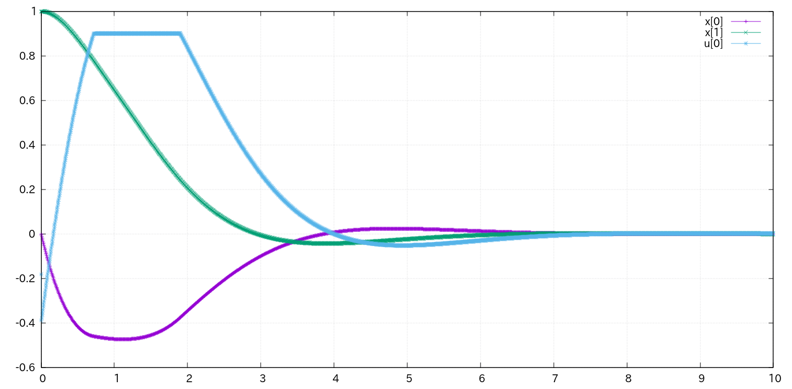
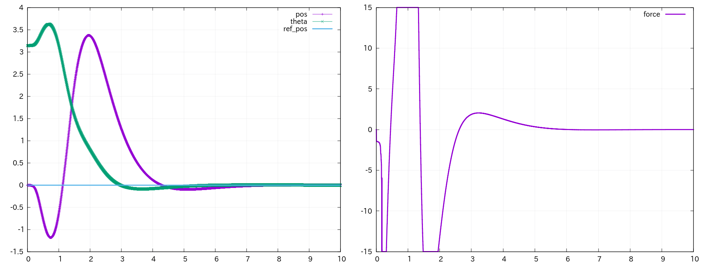

FMPC: Fast non-linear model predictive control (NMPC) combining the direct multiple shooting (DMS) method, the primal-dual interior point (PDIP) method, and Riccati recursion (RR)
Features
- C++ header-only library
- Supports inequality constraints on state and control input
- Treats the dimensions of state, control input, and inequality constraints as template parameters
- Supports time-varying dimensions of control input and inequality constraints
Install
See here.
Technical details
See the following for a detailed algorithm.
- S Katayama. Fast model predictive control of robotic systems with rigid contacts. Ph.D. thesis (section 2.2), Kyoto University, 2022.
Examples
Make sure that it is built with --catkin-make-args tests option.
Van der Pol oscillator
Control the Van der Pol oscillator. System is non-linear and time-invariant. Constraints are imposed on the state and control input.
$ rosrun nmpc_fmpc TestFmpcOscillator

TestFmpcOscillator
Cart-pole
Controlling cart-pole (also known as inverted pendulum). System is non-linear. This is an example of a realistic setup where the control and simulation have different time periods.
# 10-second simulation
$ rostest nmpc_fmpc TestFmpcCartPole.test --text
# Endless simulation
$ rostest nmpc_fmpc TestFmpcCartPole.test no_exit:=true --text

TestFmpcCartPole